Home / Past papers / MLP End Term / this paper
IIT M DIPLOMA AN1 EXAM ETD1 11 Dec 2022 - 11 Dec 2022
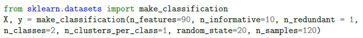
What will be the shape of X and y?- (120,90) and (120,)
- (120,10) and (120,)
- (90,120) and (90,)
- (90,10) and (90,)
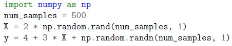
What will be the shape of the feature matrix (X.shape) and the label vector (y.shape) for the following block of code?- (699, 1) and (599, 1)
- (500, 1) and (500, 1)
- (1, 500) and (1,500)
- (599, 1) and (699, 1)
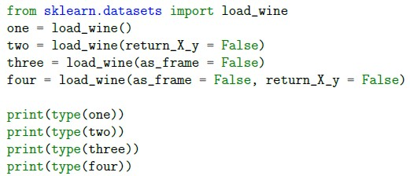
What will be the output of the following code?- Bunch, Tuple, DataFrame, DataFrame
- Bunch, Tuple, DataFrame, Tuple
- Bunch, Bunch, Bunch, Bunch
- DataFrame, DataFrame, DataFrame, DataFrame
- Bunch, Ndarray, Bunch, Ndarray
- It will result into an error.
 Consider following code snippet: Above classifier uses:
Consider following code snippet: Above classifier uses:- hinge but quadratically penalized.
- logistic regression.
- linear SVM.
- None of these.
- perceptron.
- GaussianNB
- CategoricalNB
- ComplementNB
- None of these
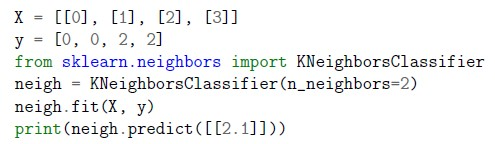
Which of the following options represents the correct output of the following block of code?- [0]
- [2]
- [1.5]
- [1]
- Ridge Regression
- SGDRegressor
- Linear Regression
- Polynomial Regression
- Statement 1 is correct but statement 2 is incorrect.
- Statement 1 is incorrect but statement 2 is correct.
- Statement 1 and statement 2 both are incorrect.
- Statement 1 and statement 2 both are correct.
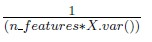
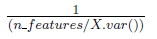
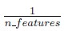
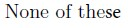
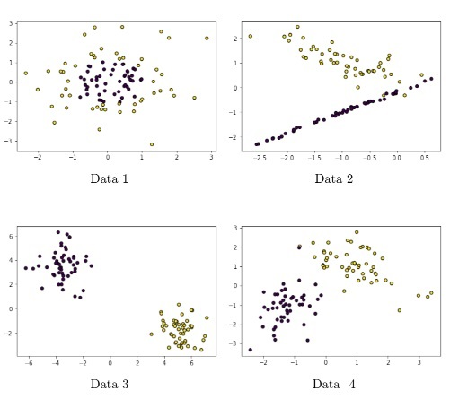
Consider the following scatter plots of four different input datasets: Which data will be classified better using gaussian rbf kernel?- Data 1
- Data 3
- Data 4
- Data 2
- It creates only two new children nodes always.
- It can create two or more new children nodes always.
- It depends on the cardinality of the categorical feature.
- It depends on the scale of the numerical feature.
- The algorithm is sensitive to outliers.
- It terminates at a local optimum if SSE is used.
- k-means is considered to be a linear algorithm.
- All of these
- Centroid Based Clustering
- Distribution-based Clustering
- Density-based Clustering
- Connectivity-Based Clustering
- CountVectorizer does not store vocabulary, its object takes less spacecompared to HashingVectorizer
- HashingVectorizer does not store vocabulary, its object takes less spacecompared to CountVectorizer
- CountVectorizer alleviates any dependence with function calls performed onthe previous chunk of data in case of incremental learning
- HashingVectorizer alleviates any dependence with function calls performed onthe previous chunk of data in case of incremental learning


- Number of features
- Number of minimum samples to split
- Height of the tree
- Diameter of the tree
- The ROC curve plots sensitivity (recall) on the x-axis against specificity on the y-axis
- A completely effective classifier is a diagonal line, and it will have an AUC of0.5.
- The larger the value of AUC, the less effective the classifier.
- An AUC of 1 indicates a perfect classifier, which means it gets all the 1scorrectly classified, and doesn’t misclassify any 0s as 1s.
- None of these
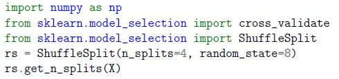
The output of the following block of code will be: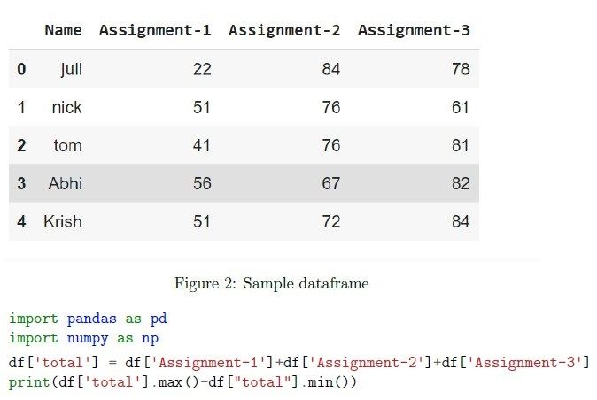
Refer the dataframe(df) given below and enter the correct output (up to 2 decimal points) for the following block of code: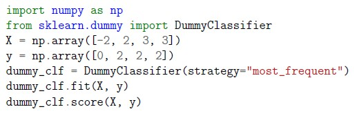
Enter the output (up to 2 decimal points) for the following block of code. What is the correct output of the following block of code? [Note: LinearSVC implements “one-vs-the-rest” multi-class strategy]
What is the correct output of the following block of code? [Note: LinearSVC implements “one-vs-the-rest” multi-class strategy]  Which of the following options represents all the correct precision, Recall, and accuracy values for the confusion matrix shown in Figure 1? [Note: All 3 values should be correct in the same option]
Which of the following options represents all the correct precision, Recall, and accuracy values for the confusion matrix shown in Figure 1? [Note: All 3 values should be correct in the same option] - Precision: 0.833 , Recall: 0.875, Accuracy: 0.833
- Precision: 0.875, Recall: 0.833, Accuracy: 0.833
- Precision: 0.9783, Recall: 0.9281, Accuracy: 0.909
- None of these
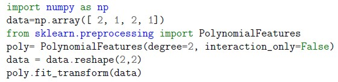
Consider the following code snippet: which of the following could be the correct output?- array([[1., 2., 1., 4., 2., 1.], [1., 2., 1., 4., 2., 1.]])
- array([[1., 2., 1., 4., 2., 1., 4., 4., 2., 1.], [1., 2., 1., 4., 2., 1., 4., 4., 2., 1.]])
- array([[1., 2., 1., 2.], [1., 2., 1., 2.]])
- array([[1., 2., 1., 4., 2., 1., 8., 4., 2., 1.], [1., 2., 1., 4., 2., 1., 8., 4., 2., 1.]])
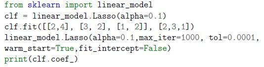
Which of the following is likely to be the correct output of the code given below?- [0.95238095, 0. ]
- [0.85,0.1,0.05]
- [2,3,1]
- [0.85,0]
- There are some mistakes in the 3rd /4th line of code, hence it will produceerror.
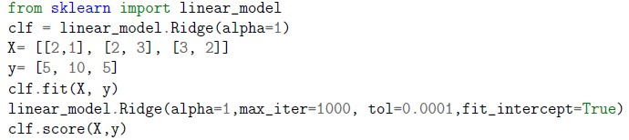
Which of the following is likely to be the correct output of the code given below?- 5
- 99
- Given code will produce an error
- 0.82
- Statement 1 is correct but statement 2 is incorrect.
- Statement 1 is incorrect but statement 2 is correct.
- Statement 1 and statement 2 both are incorrect.
- Statement 1 and statement 2 both are correct.
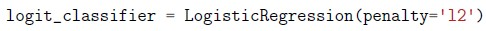
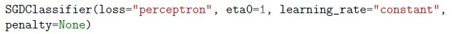
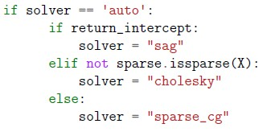
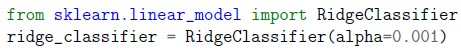
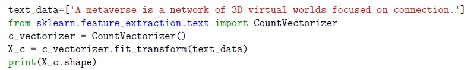
Which of the following options represents the correct output for the following block of code?- (11, 1)
- (1, 10)
- (1, 11)
- (10, 1)
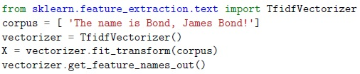
Which of the following options represents the correct output for the following block of code?- array([, ’is’, ’name’, ’the’], dtype=object)
- array([’bond’, ’is’, ’james’, ’name’, ’the’,’ !’], dtype=object)
- array([’bond’, ’bond’, ’is’, ’james’, ’name’, ’the’], dtype=object)
- array([’bond’, ’is’, ’james’, ’name’, ’the’], dtype=object)
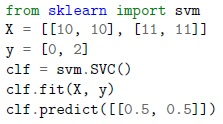
Which of the following options represents the correct output of the following block of code?- array([2])
- array([1.5])
- array([1])
- array([0])
- 2, 3
- 1, 3, 5
- 3, 5
- 2, 4
- 1, 3, 4
- 1, 2, 4


- Perform one hot encoding followed by training with LogisticRegression model(sklearn.linear_model).
- Perform standard scaling followed by asklearn.neighbors.KNeighborsClassifier model.
- Perform min-max scaling followed by a sklearn.tree.DecisionTreeClassifiermodel.
- Perform max-absolute scaling followed by asklearn.linear_model.SGDClassifier model.
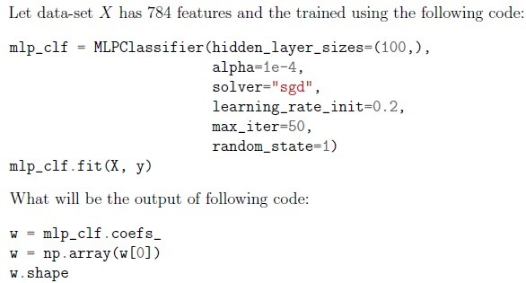
- (784, 100)
- (784, 1)
- (1, 784)
- (100, 784)
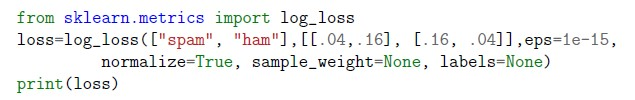
Which of the following options represents the correct output of the following block of code?- 1
- 0
- 0.110
- 0.223
- 0.533


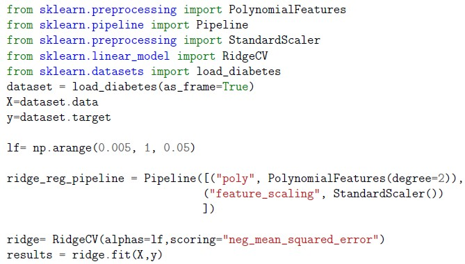
Go through the code snippet given below and answer the subquestions.- 0.055
- 0.05
- 0.905
- 0.1
- 1
- 1
- -2999.79
- 0.528
- 0.681
Answer key
- Q1 (MCQ, 2 marks): A
- Q2 (MCQ, 2 marks): B
- Q3 (MCQ, 2 marks): C
- Q4 (MCQ, 2 marks): C
- Q5 (MCQ, 2 marks): B
- Q6 (MCQ, 2 marks): B
- Q7 (MCQ, 2 marks): B
- Q8 (MCQ, 2 marks): A
- Q9 (MCQ, 2 marks): C
- Q10 (MCQ, 2 marks): A
- Q11 (MCQ, 2 marks): A
- Q12 (MCQ, 2 marks): D
- Q13 (MCQ, 2 marks): D
- Q14 (MSQ, 2 marks): C, D
- Q15 (MSQ, 2 marks): A
- Q16 (MSQ, 2 marks): B, C
- Q17 (MSQ, 3 marks): A, C
- Q18 (SA, 3 marks): 4
- Q19 (SA, 3 marks): 22.95 to 23.05
- Q20 (SA, 3 marks): 0.75
- Q21 (SA, 3 marks): 4
- Q22 (MCQ, 3 marks): A
- Q23 (MCQ, 3 marks): A
- Q24 (MCQ, 3 marks): A
- Q25 (MCQ, 3 marks): D
- Q26 (MCQ, 3 marks): A
- Q27 (MCQ, 3 marks): D
- Q28 (MCQ, 3 marks): B
- Q29 (MCQ, 3 marks): D
- Q30 (MCQ, 3 marks): A
- Q31 (MCQ, 3 marks): A
- Q32 (MCQ, 3 marks): A
- Q33 (MCQ, 3 marks): D
- Q34 (MCQ, 3 marks): A
- Q35 (MCQ, 4 marks): D
- Q36 (MCQ, 4 marks): A
- Q37 (MSQ, 3 marks): A, C
- Q38 (MCQ, 3 marks): B
Concepts this paper tests
Auto-generated summary from the source site. Handy as a checklist; the lessons above explain each idea from scratch.
Here’s a structured summary of core topics, concepts, principles, and equations essential for the "Diploma Level: Machine Learning Practice" exam, followed by Mermaid knowledge graphs to visualize relationships.
Core Topics & Concepts
1. Data Handling & Preprocessing
Dataset Generation:
sklearn.datasets.make_classification:- Parameters:
n_features,n_informative,n_redundant,n_classes,n_samples. - Output shapes:
X.shape = (n_samples, n_features),y.shape = (n_samples,).
- Parameters:
- Manual dataset creation with
numpy(e.g.,np.random.rand). sklearn.datasets.load_wine:- Returns a
Bunchobject (dictionary-like) by default. Usereturn_X_y=Truefor(X, y)tuple.
- Returns a
Feature Engineering:
Polynomial Features:
PolynomialFeatures(degree=2)generates interactions and quadratic terms.- Output shape:
(n_samples, 1 + n_features + C(n_features, 2))fordegree=2. - Example: Input
[a, b]→[1, a, b, a², ab, b²].
Text Vectorization:
CountVectorizer: Converts text to a matrix of token counts. Output shape:(n_documents, n_unique_words).TfidfVectorizer: Weights terms by importance (TF-IDF). Output: sparse matrix.HashingVectorizer: Stateless (no vocabulary storage), memory-efficient for large datasets.
Scaling/Normalization:
StandardScaler,MinMaxScaler,MaxAbsScaler.- Critical for distance-based models (e.g., SVM, KNN) and gradient descent.
2. Supervised Learning
Linear Models:
Logistic Regression:
- Hyperparameters:
penalty(l1,l2),C(inverse ofalpha),solver,l1_ratio(for elastic net). LogisticRegression(l1_ratio=0.2)sets L1 penalty to 20% and L2 to 80%.
- Hyperparameters:
Ridge/Lasso Regression:
Ridge(alpha=1): L2 regularization.alpha= regularization strength.Lasso(alpha=0.1): L1 regularization (sparse coefficients).RidgeCV: Cross-validated Ridge withalphasas input candidates.
SGDClassifier/Regressor:
- Supports
partial_fitfor incremental learning. - Hyperparameters:
loss(hinge,log,perceptron),penalty,learning_rate. SGDClassifier(loss='perceptron')implements a linear SVM (not perceptron).
- Supports
Support Vector Machines (SVM):
- Kernel Trick:
kernel='rbf'(Gaussian RBF) for non-linear boundaries. gammain RBF kernel:gamma='auto'→1 / n_features(not1 / (n_features * X.var())).- Controls the "reach" of a single training example.
Multi-class SVM:
LinearSVCuses "one-vs-rest" (OvR) by default.decision_functionshape:(n_samples, n_classes)for OvR.
- Kernel Trick:
Decision Trees:
Hyperparameters:
max_depth,min_samples_split,max_features.
Properties:
- Non-parametric, prone to overfitting if unconstrained.
- Splits create 2 children nodes (binary splits).
- Can handle both numerical and categorical features.
Neural Networks:
MLPClassifier:
hidden_layer_sizes=(100,): 1 hidden layer with 100 neurons.- Weights shape:
(n_features, n_neurons)for the first layer. - Solvers:
sgd,adam.
Evaluation Metrics:
Confusion Matrix:
- Precision =
TP / (TP + FP), Recall =TP / (TP + FN), Accuracy =(TP + TN) / Total.
- Precision =
ROC-AUC:
- AUC = 1 (perfect classifier), 0.5 (random guessing).
- ROC curve: TPR (y-axis) vs. FPR (x-axis) (not specificity).
- Log Loss: Measures probabilistic confidence. Lower = better.
3. Unsupervised Learning
Clustering:
K-Means:
- Sensitive to outliers, terminates at local optima (SSE).
- Linear algorithm (assigns points to nearest centroid).
Hierarchical Clustering:
- Connectivity-based (agglomerative/divisive).
- DBSCAN: Density-based (not covered in questions).
4. Model Evaluation & Selection
Cross-Validation:
ShuffleSplit(n_splits=4): Randomly splits data into train/testn_splitstimes.cross_validate: Returns multiple metrics (e.g.,test_score).
Hyperparameter Tuning:
GridSearchCV: Exhaustive search overparam_grid.Example:
params = {'n_estimators': range(30, 41), 'learning_rate': np.arange(0.2, 2.2, 0.2)}
Incremental Learning:
partial_fitinSGDClassifier,SGDRegressor,MiniBatchKMeans.- Useful for large datasets (out-of-memory) or streaming data.
5. Ensemble Methods
Bagging:
BaggingRegressor:max_samples: Fraction of samples per bag (e.g.,0.8).bootstrap=False: Sampling without replacement.max_features: Fraction of features per subset.
Boosting:
AdaBoostClassifier:base_estimator: Default isDecisionTreeClassifier(max_depth=1).n_estimators: Number of weak learners.
6. Specialized Topics
Imbalanced Data:
DummyClassifier(strategy="most_frequent"): Predicts the majority class.
Multi-label Classification:
- Binarize outputs for ROC-AUC extension.
Text Processing:
CountVectorizervs.HashingVectorizer:HashingVectorizerdoesn’t store vocabulary (memory-efficient).CountVectorizerrequiresfitto build vocabulary.
7. Mathematical Equations
| Concept | Equation |
|---|---|
| Linear Regression | |
| Ridge Regression | |
| Lasso Regression | |
| Logistic Regression | , where is the sigmoid function. |
| SVM (Primal) | |
| SVM (RBF Kernel) | |
| Decision Tree Split | |
| Gini Impurity | |
| Entropy | |
| Precision | |
| Recall | |
| F1 Score | |
| Log Loss | |
| AUC-ROC | |
| K-Means Objective | |
| Polynomial Features | for degree=2. |